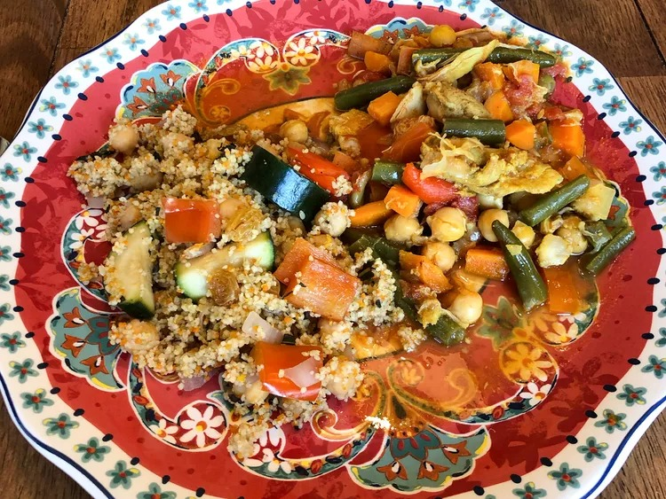

Moroccan Couscous

Description
This Moroccan couscous with lots of tender vegetables, chickpeas, and raisins is flavored with warm spices, orange zest, and fresh mint for a traditional North African dish.
- Spice Mixture:
- 1 ¼ teaspoons ground cumin
- ½ teaspoon ground ginger
- ¼ teaspoon ground cloves
- ⅛ teaspoon ground cayenne pepper
- ½ teaspoon ground cardamom
- ¼ teaspoon ground coriander
- ¼ teaspoon ground allspice
- Main Ingredients:
- 1 tablespoon olive oil
- 1 red onion, cut in half and thinly sliced
- 1 red, green, or yellow bell pepper, cut into 1-inch pieces
- 2 zucchinis, halved lengthwise and cut into ¾-inch pieces
- ½ cup golden raisins
- 1 teaspoon kosher salt
- Grated zest of one orange
- 1 (14.5 ounce) can low-sodium chickpeas, rinsed and drained
- 1 ½ cups chicken broth
- ½ cup orange juice
- 1 ½ cups couscous
- 3 tablespoons chopped fresh mint
Steps
- Place a large, heavy bottomed pot over medium heat. Stir in cumin, ginger, cloves, cayenne, cardamom, coriander, and allspice; gently toast until fragrant, about 2 to 3 minutes. Stir in oil and onion, cook until softened. Stir in bell pepper and zucchini; cook for 5 minutes. Stir in raisins, salt, zest, and chickpeas.
- Pour in chicken broth and orange juice; turn heat to high and bring to a boil. When the mixture is boiling, stir in couscous and remove from heat; cover, and let stand 5 minutes. Fluff with a fork, and fold in chopped mint.